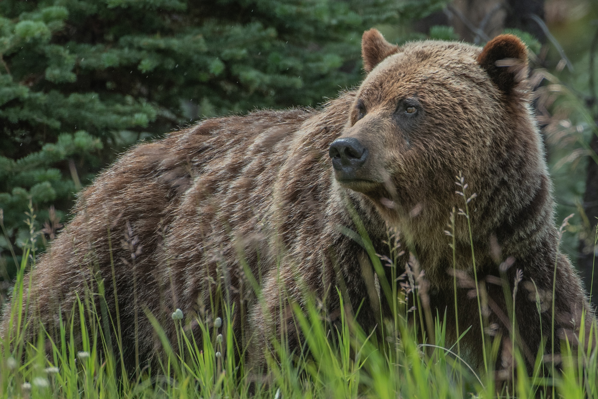

Bears
What are bears?
Bears are mammals that belong to the family Ursidae. They can be as small as four feet long and about 60 pounds (the sun bear) to as big as eight feet long and more than a thousand pounds (the polar bear). They’re found throughout North America, South America, Europe, and Asia.

COMMON NAME: Bears SIZE: body: 2meters(adult)
SCIENTIFIC NAME: Ursidae SIZE: tail: 6-22cm
TYPE: Mammals WEIGHT: 60 to 1,600 pounds
DIET: Omnivore AVERAGE LIFE SPAN IN THE WILD: 20 to 25 years
SCIENTIFIC NAME: Ursidae SIZE: tail: 6-22cm
TYPE: Mammals WEIGHT: 60 to 1,600 pounds
DIET: Omnivore AVERAGE LIFE SPAN IN THE WILD: 20 to 25 years